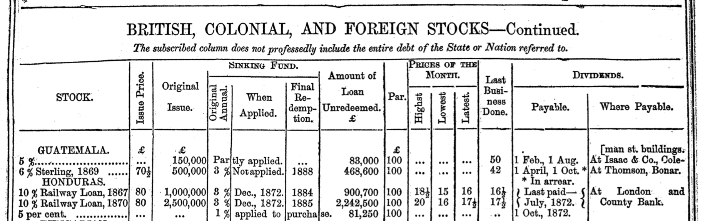
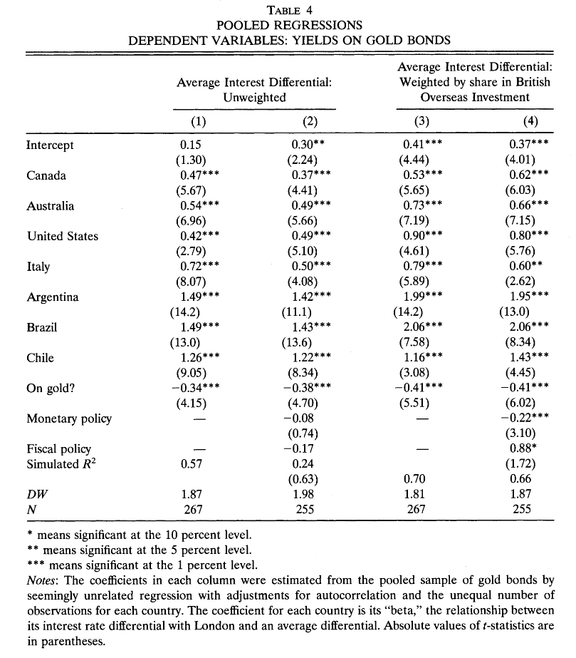
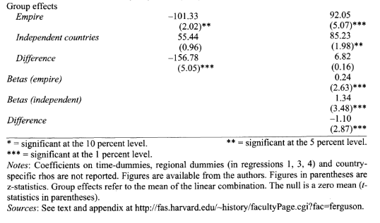
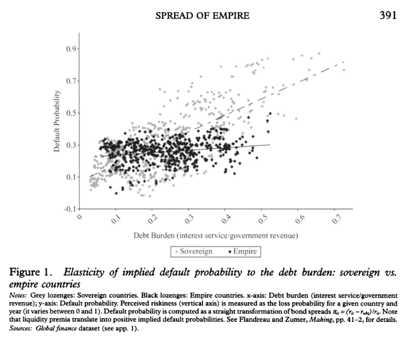
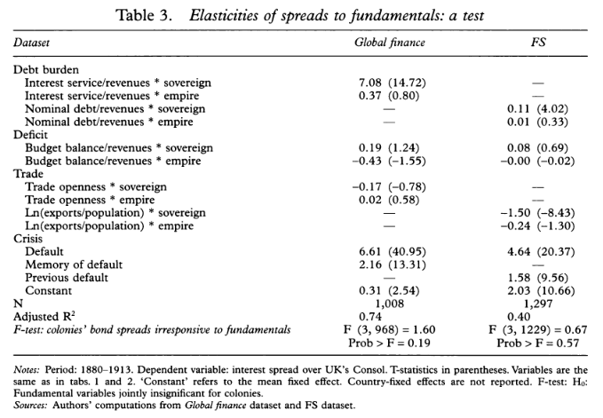
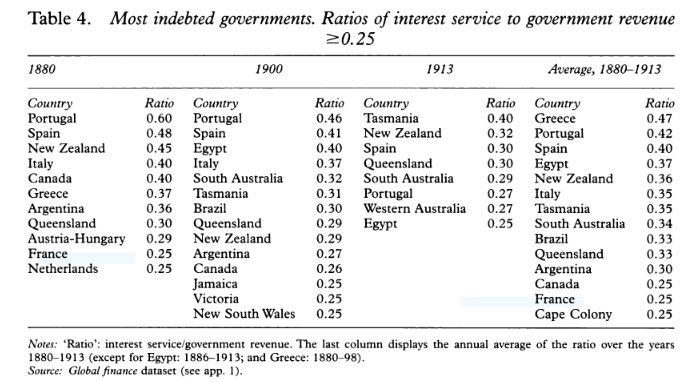

Bonds are debt instruments — a way of borrowing money from investors
Key features:
Historically, many sovereign bonds were issued in London in sterling (e.g., £100 per bond) and traded on the London Stock Exchange

Take the Honduras 10% Railway Loan, 1867 as an example:
Par (£100): the amount Honduras is contracted to repay per bond
Issue price (£80): what investors paid when the bond was first sold — Honduras’s effective borrowing rate was \(£10/£80 = 12.5\%\)
Market price (≈£16): what the bond trades for today on the LSE — investors buy it from other investors, not from Honduras
The denomination (£100) is conventional and not intrinsically important
The yield is the coupon divided by the current market price
For the Honduras bond at £16:
\[ \text{yield} = \frac{£10}{£16} = 62.5\% \]
This is a current yield (also called a simple yield) — there are more complex yield-to-maturity calculations that account for the time until the £100 par value is repaid
A high yield signals something important: will the next coupon actually be paid?
Imagine a British government bond yields 2% — close to risk-free
The Honduras bond yields 62.5% — why wouldn’t every investor buy it?
Bond traders tend to equalize risk-adjusted returns: you buy the Honduras bond only if, adjusting for default probability, you expect to earn at least as much:
\[ (1 - p_{\text{default}}) \times 62.5\% \ge 2\% \]
Solving: for an investor just indifferent at the current price, \(p_{\text{default}} \approx 96.8\%\)
High yield \(\Rightarrow\) market prices you as a very high default risk
The framework above is too simple in two ways. First, investors are risk-averse:
A certain £100 is worth more than a 50% chance of £0 and a 50% chance of £200 — even though both have the same expected value
Losing money now costs you even more later because you have less to invest in the next opportunity (see: Kelly betting and volatility drag)
As a result, riskier bonds carry a risk premium — the yield is somewhat higher than the default probability alone would justify
Second, default is not an all-or-nothing event:
Most defaulting borrowers reach a restructured settlement with bondholders — paying back something, just not everything
There are soft defaults: paying in a devalued currency, or (for bonds denominated in local currency) inflating away the real value
Why is high inflation a form of soft default on a local-currency bond?
The full calculation of default probability from market prices is therefore more complex than the simple model
Despite these complications, the core insight holds:
Higher yield \(\Rightarrow\) higher market-perceived probability of default (in some form)
Default can take many shapes: non-payment, currency abandonment, inflation
This makes bond yields a key object of study for understanding market perceptions of governments: their stability, macroeconomic policies, currency commitments
Caveat: bond yields measure default risk, not growth prospects — bondholder interests may not align with broader economic welfare
Bond yields differ across countries — these differences reflect investor perceptions of credit-worthiness
A natural question: what factors explain these differences?
Two candidates feature prominently in the literature:
A third paper shows that the regression specification matters enormously for what we conclude (Accominotti, Flandreau, and Rezzik 2011)
Bordo and Rockoff (1996) start from the observation that bond yields vary substantially across countries
Their hypothesis: adherence to the gold standard was a credible commitment device that reduced borrowing costs
What are some possible mechanisms?
They test this by regressing sovereign bond yields on country characteristics and a gold standard dummy (= 1 if on gold)

Regression results from Bordo and Rockoff (1996)
The “On gold?” dummy takes a value of approximately −0.4 across specifications
This means: being on the gold standard is associated with borrowing costs 0.4 percentage points lower, holding other country characteristics constant
Bordo and Rockoff (1996) interpret their findings:
“Countries that adhered faithfully to the standard were charged rates only slightly above the British consol rate; countries that made only sporadic attempts to maintain convertibility and that altered their parities were charged much higher rates… We interpret these findings to mean that adhering to gold was like the ‘good housekeeping seal of approval.’”
Is gold standard adherence really driving the yield difference, or something else?
The countries that most consistently stayed on gold were places like France, the US, and British colonies like Canada — already relatively creditworthy
Countries that struggled, like Italy, inherited severe fiscal problems from unification — independent of their monetary regime
This invites a classic concern: omitted variable bias
Perhaps the same underlying characteristics that made gold adherence easy also made borrowing costs low, independent of gold
Ferguson and Schularick (2006) argue the explanation lies less in gold and more in empire membership
They acknowledge Bordo and Rockoff, but note the two variables are hard to disentangle: being in the empire also typically meant being on gold — and much more
Their key claim:
“The main inference we draw is that the empire effect reflected the confidence of investors that British-governed countries would maintain sound fiscal, monetary, and trade policies.”
“There are only three borrowers in our sample which became (de facto or de jure) colonies within the period: Egypt in 1882, and the Transvaal and the Orange Free State after the Boer War in 1900.”
Most countries are either always or never in the empire during the sample period
This means the “empire effect” is estimated almost entirely from cross-sectional variation: comparing yield levels between empire and non-empire countries
Why is within-country variation (before vs after joining the empire) more convincing than between-country comparison?

Countries in the British Empire paid approximately 100 basis points (1%) lower interest rates
They conclude:
“Even when we allow for differences in monetary and fiscal policy, openness to trade, political stability, as well as geographical location and level of economic development, we find that a country that was a part of the British Empire was still able to borrow at significantly lower interest rates than one that was not.”
Accominotti, Flandreau, and Rezzik (2011) revisit Ferguson and Schularick (2006) and argue the regression specification is fundamentally flawed
The critique is conceptual but maps directly onto the dummy variable approach
Both earlier papers model empire as:
\[ \text{yield}_{it} = \alpha + \beta_1 \text{Empire}_i + X_{it} + \epsilon_{it} \]
The empire dummy shifts the intercept: colonies get a constant discount on borrowing costs, other things equal
Accominotti, Flandreau, and Rezzik (2011) challenge this: “it is not possible to move between sovereignty and colonial status while keeping other things equal”
“…a critical assumption of this methodology is that the institution under scrutiny has a constant marginal effect on the variable that it is supposed to be influencing. In many cases this does not hold. ‘Institutions’ do not have a marginal effect, but a structural one.”
What does “constant marginal effect” mean here?
The regression assumes that the relationship between yields and debt burden (or any other fiscal variable) is the same for colonies and sovereign states — empire just shifts the level
Accominotti et al. argue this is wrong
“…it is assumed that investors thought of British colonies in essentially the same way as they thought of sovereign countries; that is, they priced them according to the very same formula, involving the same variables. Then in a second stage, investors applied a bonus and traded colonies at a higher price… The second stage reduction in interest rates is the so-called ‘empire effect’, and it is measured ‘other things being equal’.”

The y-axis shows a default probability derived from bond yields (a way of putting all yields on a 0–1 scale)
The x-axis shows the debt burden: interest payments divided by government revenue
Sovereign states (one colour): a strongly positive relationship — higher debt burden \(\Rightarrow\) higher default risk
Colonies (other colour): a flat relationship — debt burden is essentially unrelated to default risk
Interpretation: nobody cares what India’s debt burden is if the British government will cover its obligations; everybody cares what Italy’s debt burden is

“The Empire made the spread paid by subject countries insensitive to their performance because credibility was decided elsewhere. You would not look in India for indications of India’s credit. More likely, you would look at Downing Street. The effect of empire was not to provide subjects with a marginal interest rate benefit but to remove the default risk altogether.”

Do we think the gold standard or policies linked to empire are better explanations of the variation in bond yields?
Do we agree with the criticisms of Accominotti, Flandreau, and Rezzik (2011) that the dummy variable approach to institutions is mis-specified?
How do we map the Accominotti, Flandreau, and Rezzik (2011) critique onto a warning about the limits of regression analysis?